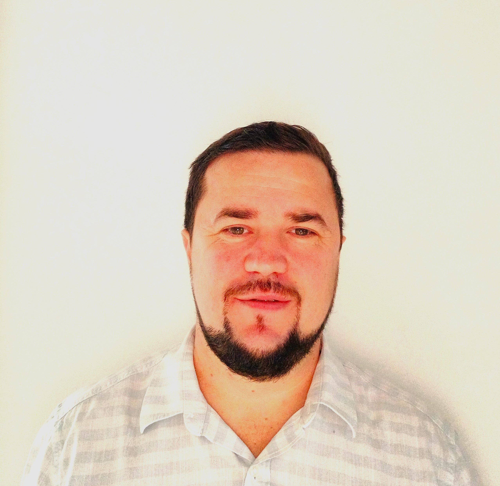

CHIRIAC FLORIN
Vlotte veertiger met een passie voor reizen en programmeren. Deadlines en flexibele werktijden schrikken me niet af. Ondanks mijn perfectionisme maak ik graag tijd voor een goed boek waarbij ik mijn batterijen weer oplaad voor de volgende uitdaging.
PERSOONLIJKE INFORMATIE

- Geboren 11 april 1982 te Onesti(Roemenie)
- Bolle-Akkerweg 16 8800 Roeselare
- 0466/06/73/21
- florinlupu33@gmail.com


OPLEIDING
- 2024: Full Stack Developer (VDAB)
- 2023: Basis JavaScript Developer (CREO)
- 2018: Mecanicien lichte wagens en bedrijfsvoertuigen (VDAB)
- 1996-1999: Electriciteit voor de classic wagens (Grup Scolar Auto Onesti)
TALENKENNIS
- Nederlands: vloeiend
- Engels: vloeiend
- Frans: basis
- Roemeens: moedertal
LOOPBAAN
- Jan 2024-nu: Opleiding Full Stack Developer (VDAB)
- 2020-2023: Automonteur (VDL Bus Roeselare)
- Dec 2018- April 2020: Mecanicien (PowerCars Torhout)
- 2017-2018: Opleiding Mecanicien (VDAB)
- 2016-2017: Retoucher (Vdl Bus Roeselare)
- 2012-2016: Spuiter (WwL High & Heavy Zeebrugge)
COMPETENTIES
- Persoonsgebonden: Teamspeler, Sociaal, Punctueel, Verantwoordelijk
- Technisch: HTML, CSS, JavaScript, PHP, SQL
VARIA
- Reizen, Boeken lezen, Muziek luisteren,Tennis, Zwemmmen